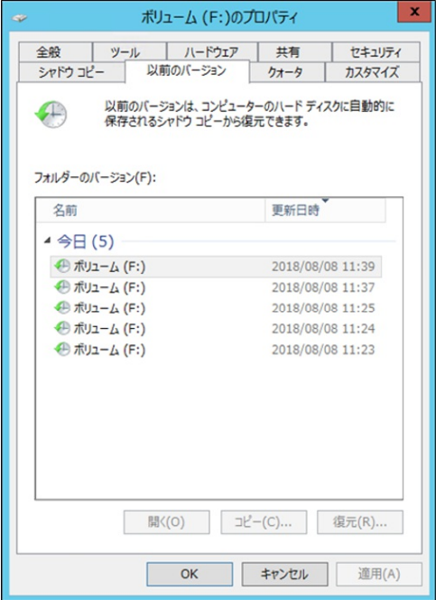

※ 本記事は弊社の Technet から移行した記事です。
こんにちは、Windows プラットフォーム サポートの加藤です。
今回は、共有フォルダーのシャドウ コピーが世代数の上限値まで保存されている状態で、Windows Server バックアップや読み取り chkdsk など、シャドウ コピーの自動作成を行うアプリケーションを実行すると、最も古い共有フォルダーのシャドウ コピーが削除されてしまう事象について、ご紹介いたします。
この事象は、次期の Windows OS より修正が行われるため、現在お使いの OS ではシャドウ コピーを取得する世代の上限値を 1 つ多く設定する対策が必要となります。
対象 OS
• Windows Server 2008 R2
• Windows Server 2012 / 2012 R2
• Windows Server 2016
目次
■ シャドウ コピーとは
• シャドウ コピーの種類
• シャドウ コピー作成 / 世代管理 の仕組み
• シャドウ コピーの設定
■ 事象について
• 事象解説
• 事象の回避策
• [参考] 事象発生の検証
■ シャドウ コピーとは
シャドウ コピーとは、ボリュームの静止点 (特定の時点) の複製であり、専用の記憶領域 (以下、シャドウ コピーの記憶域)に格納されています。
シャドウ コピーの種類
シャドウ コピーには、用途に応じて、下記の種類が存在します。
| 種類 | 説明 |
|---|---|
| ClientAccessible | - vssadmin create shadow コマンドでシャドウコピーを作成した場合- 共有フォルダーのシャドウコピー機能の利用でシャドウコピーを作成した場合 |
| DataVolumeRollback | - Windows Server バックアップ実行時など、アプリケーションの要求によって自動作成された場合 (バックアップ データの世代管理などのために利用される) |
| ApplicationRollback | - Windows Server バックアップ実行時に、バックアップ作成元の整合性チェックのために自動作成された場合 |
| FileShareRollback | - Chkdsk コマンド使用時 (ボリュームの整合性チェックのために一時的に利用される) |
| ClientAccessibleWriters | - 復元ポイント作成時 |
ClientAccessible 属性は、共有フォルダーのシャドウ コピー機能を用いてシャドウ コピーを作成するため、共有フォルダーのシャドウ コピーと呼ぶ場合があります。共有フォルダーのシャドウ コピーを利用すると、ファイルを編集前の状態に戻したい場合や誤って削除してしまった場合に、過去にシャドウコピーを取得した時点のボリュームの状態に復元することができます。
DataVolumeRollback 属性は、Windows Server バックアップ実行時に、バックアップ データの世代管理のために、バックアップ先に自動で作成されるシャドウ コピーです。常に最新のバックアップ データが上書き保存されていくため、それ以前のバージョンはシャドウ コピーによって管理されています。
ApplicationRollback 属性 と FileShareRollback 属性 は、Windows Server バックアップ実行時、読み取り chkdsk 実行時に、ボリュームに変更があると整合性が合わなくなるため、一時的に作成したシャドウ コピーを利用します。
これは、一時的に作成・使用されるものであり、それぞれの実行後に使うことはないため自動で削除されます。
ClientAccessibleWriters 属性は、コンピューターの復元を利用して復元ポイント作成した際に、作成されるシャドウ コピーです。
本ブログでは、共有フォルダーのシャドウ コピー (ClientAccessible 属性) と、アプリケーションによるシャドウ コピー (DataVolumeRollback 属性 / ApplicationRollback 属性 / FileShareRollback 属性) が登場します。
シャドウ コピー作成 / 世代管理 の仕組み
シャドウ コピーの記憶域には、直前の状態との差分を記録している「Diff Area」と、それ以前の世代の差分を記録している「シャドウ コピー (差分データ)」が保存されています。
想定された動作では、ファイルの更新や削除などボリュームに変更が生じた場合、変更前のデータをシャドウコピーの記憶域の中の Diff Area に退避し、実際のボリュームに変更部分を反映させています。シャドウ コピーの作成を行うと、この Diff Area に退避されていたデータがいわゆる “差分データ” として保存されます。
その後、新しい Diff Area が作成され、再びボリュームに変更が生じた際には変更前のデータを退避し、シャドウ コピーの作成を行うと、差分データとして保存されます。
このように、シャドウ コピーは差分を1世代ごとに管理しているため、特定のタイミングのボリュームの状態に復元を行う場合、復元したいタイミングのシャドウコピーに至る前のすべてのシャドウ コピーが必要になります。
詳しい情報：
===========================================================================
[タイトル] ボリューム シャドウ コピー サービス (VSS) について
[URL] https://learn.microsoft.com/ja-jp/archive/blogs/askcorejp/aboutvss
[内容] シャドウ コピーを作成するサービスである、ボリューム シャドウコピー サービス
(VSS) についてご紹介しているブログになります。
===========================================================================
シャドウ コピーの設定
シャドウ コピーには、保存できる世代数や記憶域に上限値を設定できます。
シャドウ コピーの記憶域の上限値とは、シャドウ コピー を保管するための領域全体のサイズのことです。
保存できる世代数の設定は共有フォルダーのシャドウ コピーのみに制限がかかり、記憶域の設定は共有フォルダーのシャドウ コピーとアプリケーションによるシャドウ コピーの両者に制限がかかります。
上限に達した状態でシャドウ コピーを作成した場合は、シャドウコピーの種類を問わずに最も古い世代から自動で削除される動作となっています。
シャドウコピーの世代数の設定レジストリは、以下のコマンドから確認することができます。
===========================================================================
[コマンド] reg query “HKEY_LOCAL_MACHINE\SYSTEM\CurrentControlSet\Services\VSS\Settings”
[確認箇所] MaxShadowCopies REG_DWORD 0x
※ MaxShadowCopies の値がない場合は、標準の 64 世代が上限となります。
===========================================================================
シャドウ コピーの記憶域の最大領域の確認方法は、以下のコマンドから確認することができます。
===========================================================================
[コマンド] vssadmin list shadowstorage
[確認箇所] シャドウ コピーの記憶域の最大領域
※ 標準は、下記のとおりです。
共有フォルダーのシャドウ コピーの場合： 当該ボリュームのディスクサイズの 10 %
Windows Server バックアップの場合： 当該ボリュームのディスクサイズの 30 %
Windows Server バックアップ専用ディスクの場合： 制限なし (UNBOUNDED)
===========================================================================
■ 事象について
事象解説
世代数上限値まで共有フォルダーのシャドウ コピーが保存されている状態でシャドウ コピーの自動作成を行うアプリケーションを実行すると、最も古い共有フォルダーのシャドウ コピーが削除されるという問題が発生しています。
本ブログでは、読み取り chkdsk の実行を例として、順を追ってボリュームの状態を説明します。
◆ 補足：読み取り chkdsk とは
本事象は、 MaxShadowCopies の動作と chkdsk コマンドが作成するシャドウ コピーが関係して発生しています。
chkdsk コマンドは、ファイルシステムのエラーをチェックし、表示・修復するためのプログラムです。
オプションを指定せずに実行すると、一切の修復作業を行いません。
上述の通り、chkdsk コマンドを実行すると、chkdsk 中にボリュームに変更が生じた場合の整合性を保つために、一時的なシャドウ コピー(FileShareRollback 属性) を作成します。これは、一時的に作成・使用されるものであり、chkdsk 終了後に使うことはないため自動で削除されます。
コマンド：
chkdsk
実行例：Dドライブに対して読み取り chkdsk を実行
chkdsk d:
詳しい情報：
===========================================================================
[タイトル] chkdsk
[URL] https://learn.microsoft.com/en-us/windows-server/administration/windows-commands/chkdsk?tabs=event-viewer
[内容] Windows のコマンドのうち、chkdsk コマンドの仕様について書かれたページになります。
===========================================================================
◆ 想定された動作について
以下の図は、共有フォルダーのシャドウ コピーが世代上限まで作成されたボリュームの状態を示しています。
青線の四角はシャドウ コピーの記憶域を示しており、今回は MaxShadowCopies を 5 世代に設定している想定です。
緑の四角は各世代の共有フォルダーのシャドウ コピーを示しており、黄色の四角はデータの差分を示しています。
最新の共有フォルダーのシャドウ コピーを作成した後、データには変更が生じていないことを想定しているため、データの変更を退避するための Diff Area は空の状態となっています。
Windows の想定された動作として、世代数上限値 (上の図では 5 つ )まで共有フォルダーのシャドウ コピーがすでに保存されている状態で、新しく共有フォルダーのシャドウ コピーを作成すると、最新のシャドウ コピーを保存するために、最も古いシャドウ コピーがシステムによって自動的に削除されます。
以下の図は、実際の GUI 上の表示と、ボリュームの状態を図示しています。
◆ 想定していない動作について
本来であれば、chkdsk を行う際に作成されるシャドウ コピーはアプリケーションによるシャドウ コピーであるため、MaxShadowCopies による削除は発生しません。
しかし、今回はこの動作にバグがあり、MaxShadowCopies が、新しく追加されるシャドウ コピーの属性を見ないままに、次のシャドウ コピーが入るように、最も古い共有フォルダーのシャドウ コピーを削除するという現象が発生しています。
しかし、実際は、アプリケーションによるシャドウ コピーが追加されており、共有フォルダーのシャドウ コピーが追加されることはありません。そのため、結果として、最も古い共有フォルダーのシャドウ コピーが想定外に削除されています。
なお、これは MaxShadowCopies の動作のため、保存されている共有フォルダーのシャドウ コピーが世代上限に達している状況でなければ発生することはありません。
事象の回避策
本事象では、最も古い共有フォルダーのシャドウ コピーが削除されてしまうことが、システムへの影響となります。お客様の運用で保存しておく共有フォルダーのシャドウ コピーの世代数を決めている場合は、上記の動作により、想定よりも世代が一つ少なく管理されている可能性があります。
上述の通り、本事象は 次期の Windows OS より修正が行われるため、現在お使いの OS での回避策としては、シャドウ コピーを取得する世代の上限値を 1 世代多く設定する必要があります。
[参考] 事象発生の検証
共有フォルダーのシャドウ コピーの世代数の上限を設定する
- [スタート] – [ファイル名を指定して実行] をクリック、regedit と入力し、[OK] をクリックする
- 以下のレジストリ キーを開く
HKEY_LOCAL_MACHINE\SYSTEM\CurrentControlSet\Services\VSS\Settings - メニュー バーより、[編集] – [新規] を選択し、[DWORD 値] をクリックする
- MaxShadowCopies と入力し、Enter キーを押す
- MaxShadowCopies を選択した状態で、メニュー バーより、[編集] – [修正] をクリックする
- 設定する世代数を入力し、[OK] をクリックする
- [スタート] – [ファイル名を指定して実行] をクリック、regedit と入力し、[OK] をクリックする
設定した世代数の上限まで共有フォルダーのシャドウ コピーを作成する
- エクスプローラーを開き、左メニューの [PC] – [<当該ドライブ>] を選択し、右クリックで [シャドウ コピーの構成(W)] を開く
- 新しく開いたシャドウ コピーのウィンドウにて、[<当該ドライブ>] を選択し、[有効 (E)] ボタンをクリックする
- [今すぐ作成ボタン] から 手順 (1) で設定した世代数の上限まで共有フォルダーのシャドウ コピーを作成する
- エクスプローラーを開き、左メニューの [PC] – [<当該ドライブ>] を選択し、右クリックで [プロパティ] を開く
- 新しく開いたプロパティのウィンドウのタブから [以前のバージョン] をクリックする

※ OS のバージョンによって [シャドウ コピー] タブがある場合とない場合がございます。 - (2-6) 手順 (1) で設定した世代数と同じ数の共有フォルダーのシャドウ コピーが作成されていることを確認する
chkdsk コマンドを実行する
コマンドプロンプトを管理者権限で開く
以下のコマンドを実行する
chkdsk
実行例: > chkdsk f:chkdsk の実行が終了後、当該ボリュームのプロパティを開きなおし、[以前のバージョン] タブをクリックし、共有フォルダーのシャドウ コピーの数を確認する
chkdsk コマンド実行前から、最も古い共有フォルダーのシャドウ コピーが 1 世代減った場合は、事象の発生が確認されました。
いかがでしたでしょうか。
本ブログが少しでも皆様のお役に立てますと幸いです。